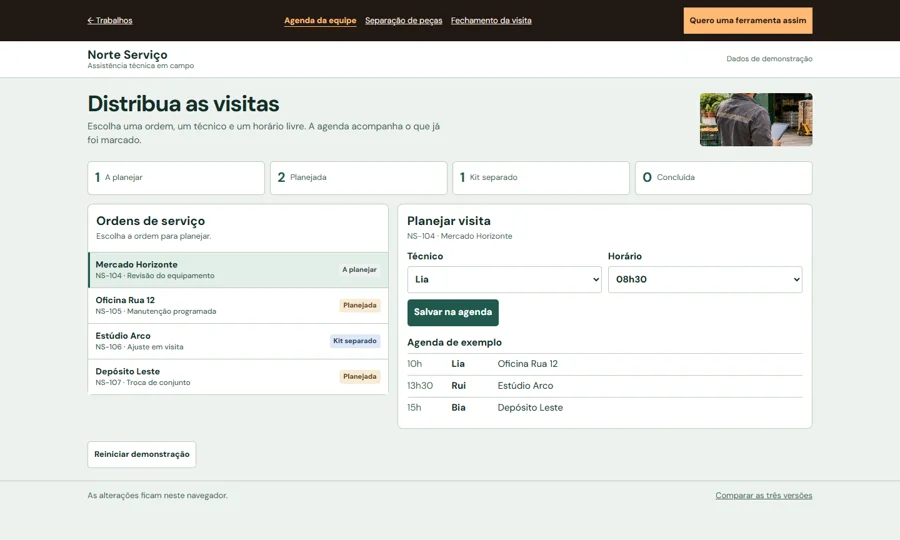
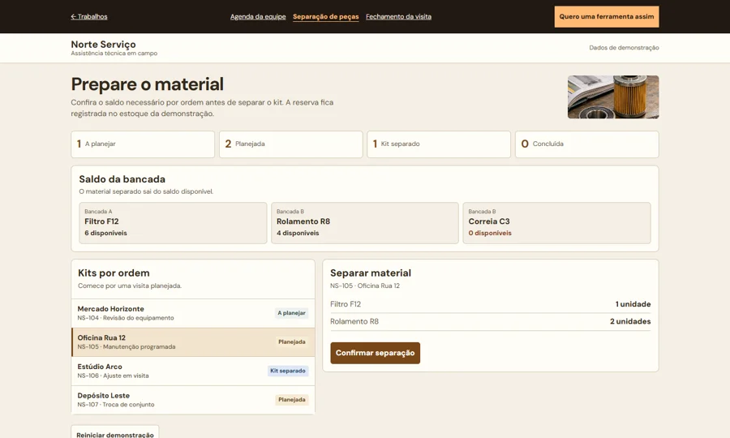
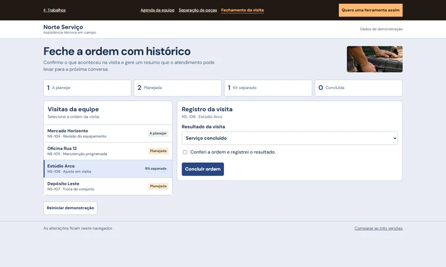

Norte Serviço
Escolha uma estação de trabalho. As três compartilham as mesmas ordens de exemplo.

Agenda da equipe
Escolha uma ordem, um técnico e um horário livre. A agenda acompanha o que já foi marcado.

Separação de peças
Confira o saldo necessário por ordem antes de separar o kit. A reserva fica registrada no estoque da demonstração.

Fechamento da visita
Confirme o que aconteceu na visita e gere um resumo que o atendimento pode levar para a próxima conversa.